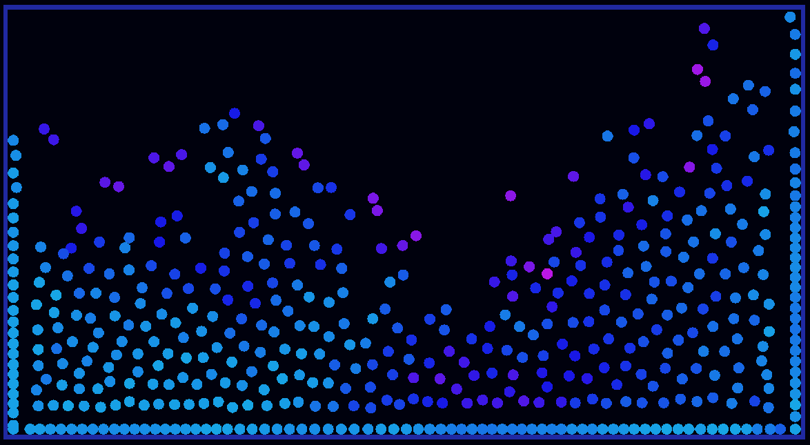
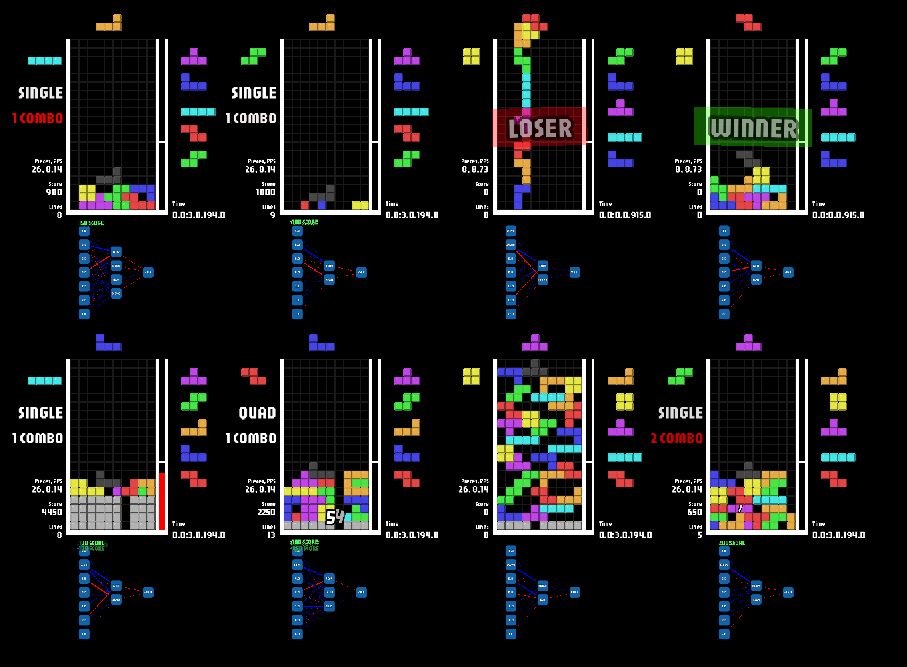
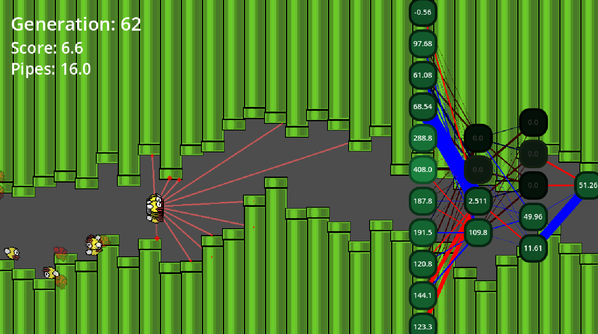
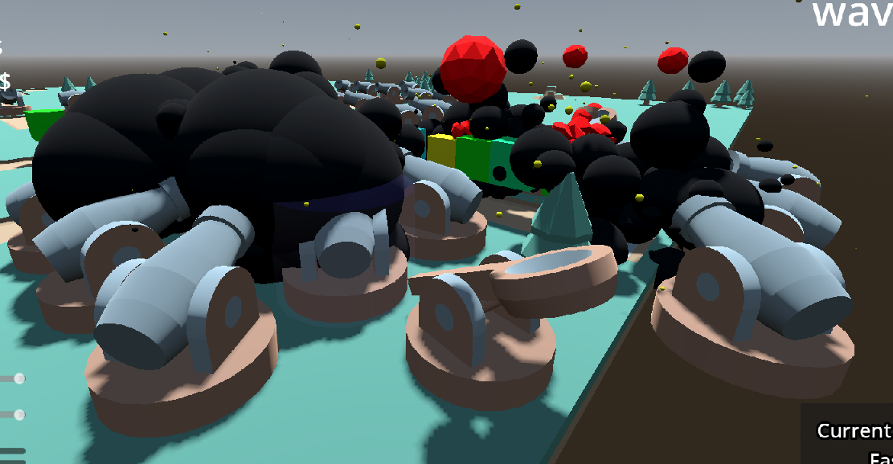

This is not the final result!
Be sure to stop by and visit again later!
Hello! My name is Kenneth Gould.
I am a Programmer, Game developer, and Musician!
Some of my other big interests are Psychology, Cosmology, Philosophy, Epistemology, and Teaching others!
Below you can see some of the projects that I have made over my life so far.
Give em a shot! Sorry if some of the explanations don't make too much sense, I hope the projects still look pretty cool though!
These are some of my projects that i have worked on into a usable state.
Feel free to check them out, and mess around a bit!

This is a simple fluid simulation.
In the future, I'll will remake it using a Compute Shader instead! (wish me luck with that!)

First, I remade tetris as accurately as possible.
Then, I built a simple neural network.
Finally, I forced those artifically created minds to
fight eachother to the death.
Turns out, utilizing the wonderful process of evolution to make AI better
at classic video games works pretty well!
The longer you have it running on your browser, the better the bots become!
I do plan on returning to this project later, and making it even better.

This is similar to the Tetris AI, but they fly through pipes instead!
The longer you leave the simulation running, the better the birds get!
In my opinion, it makes for a really nice wallpaper or screensaver.
On the right side, you can see the "brain" of the best bird!
All of the inputs the bird "sees" are how far the rays from the bird shoot.
You can even see the bird's line of sights visually!

This is a simple tower defense that I made for my Game Development class in high school.
Includes dynamic map generation, a wave system, and a fully functional and responsive placement system!
Those are my most notable projects, but I have even more projects
listed on my Itch.io page!
Click the text above to see more!